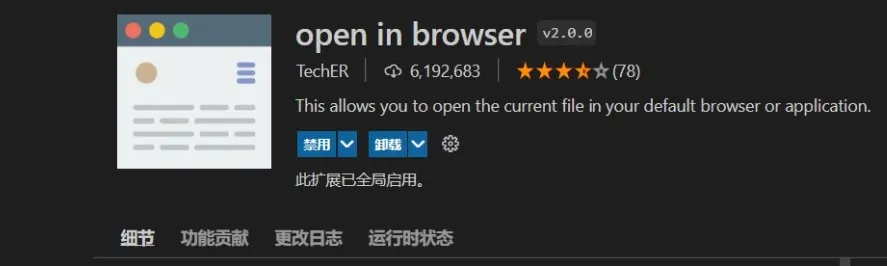

open in browser
扩展分类:
前端,
快捷启动
它原本的功能是方便快捷地使用你的默认设置浏览器打开你的html文件，以进行快速预览和调试。

当然它的默认设置浏览器是可以在它的设置里更改的。
另外，它已经不再局限于打开html文件了（源自官方扩展介绍页面）。用官方原话来讲，你可以借助它在Code的工作区内直接用默认软件打开任何能够被执行或修改的文件。
我只能说，这真的挺方便的，不用我们另外在资源管理器再打开一次工作路径，能节省步骤。
它的一些快捷键：
| 按键 |
命令 |
Alt+B |
使用默认浏览器打开 |
Shift+Alt+B |
使用指定浏览器打开 |
它的官方介绍页面。
← 回到主页